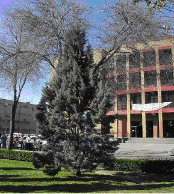

| Cupressus
arizonica Greene, Bull.
Torrey Bot. Club 9: 64 (1882)
|
Cupresáceas |
| Ciprés de
Arizona |
Árbol escuamifolio |
|
Árbol
escuamifolio, perennifolio, monoico,
de 7 metros de altura, con tronco recto de 44 cm de
circunferencia y copa cónica, abierta, de 3 m anchura en la
base, con las ramas inferiores horizontales; corteza más o
menos
lisa, con láminas delgadas.
Hojas escuamiformes,
opuestas,
decusadas, imbricadas, de color verde grisáceo azulado, con
glándulas resinosas.
Estróbilos masculinos de
3
mm, terminales, ovoideos,
amarillos, con escamas peltadas.
Estróbilos femeninos (piñas) de 2-3 cm de diametro, globosos, con 6-8 escamas poligonales peltadas que se separan para dejar salir a las semillas. (1)
Florece de Enero a
Febrero. (1)
|
 Foto: Conchi Sánchez |
[Espacio para fotos de detalle] |
Observaciones.-
El nombre Cupressus deriva
del griego kus,
crecer, y parisos, igual, por
crecer de forma
uniforme, con referencia al ciprés comun.
Es indiferente al tipo de suelo y resistente al frío. Se
usa
como árbol ornamental, y para formar barreras que impiden el
paso del viento
debido al porte compacto que suele presentar.
|
| Área de Origen.-
Montañas del Centro y Norte de América (1.500-2.300
m.s.m.). |
|
| Uso en el campus.- Como
árbol ornamental, un único ejemplar sobre césped
en la zona central del
Campus. |
Localización.- Zona central del
Campus:
Jardín del Estanque
|
|
Más información en: ”Nearctica, the natural world of North America“, http://www.nearctica.com/trees/conifer/cupress/Cariz.htm |
|
| Alfonso Rabadan González, Conchi Sánchez & Carlos Romero Zarco (2003) | |